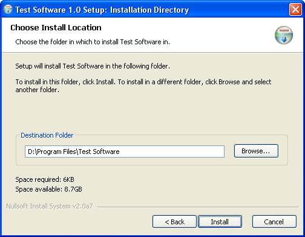

Using KiCHiK's NSIS 2 modifications, it is possible
to create new user interfaces for the Nullsoft Installer System.
I made this interface with a modern wizard style,
like the wizards of recent Windows versions. This new interface
also features new icons (designed by adni18) and a description
area on the component select dialog.
To use this new UI for for installer, you need
to add some code to your NSIS script, which you can see in Example.nsi.
KiCHiK's
NSIS 2 modifications, version 2.0 alpha 7 (or later)

Have a look at the example script, Example.nsi.
This is an example of how the use this interface for your NSIS
installer.
To change elements on the dialogs, modify modern.exe
in the Contrib\UIs folder using a a resource editor such as
Resource Hacker.
The new macro system has full multilanguage support,
for an example, see Multilanguage.nsi
The 'Loading Setup' text on the slash screen
which is being displayed when the installer is starting (Verifying
installer, Unpacking data when using COMPRESS_WHOLE) cannot
be changed by the script, because the installer is not started
yet when this dialog is being displayed. If you want to change
this text, modify dialog 111 of modern.exe.
To 'verifying installer' and 'unpacking data'
texts are defined in the language header file of the NSIS exehead
(Source\exehead\lang.h). To change them, you need to edit this
file and recompile NSIS.
If you have an installer with a lot of subsections or long
section names, use the modern2.exe ui, which has a larger treeview for
the component selection. To use modern2.exe, change the first parameter
of the MUI_INTERFACE macro.
- 1.15 - Semtember 4th, 2002
- Multilanguage example: changed LangDialog to LangDLL::LangDialog (using the DLL name is now required)
- 1.14 - Semtember 3th, 2002
- Small grammar fix (thanks eccles)
- UI files updated by Justin for better RichEdit usage
- 1.13 - Semtember 2th, 2002
- 1.12 - August 30th, 2002
- Verifying installer & Unpacking data dialog has no titlebar anymore
- 1.11 - August 29th, 2002
- Finish header for uninstaller can also be set using MUI_FINISHHEADER
- 1.1 - August 29th, 2002
- Header file with macros, it's now very easy to use the UI in your scripts :)
- Added the modern2.exe UI, with an other location of the Description frame,
for installers with a lot of subsections (thanks rainwater)
- Updated example scripts
- Added Multilanguage.nsi example (Multilanguage & LangDLL)
- Fixed background color issue with some custom XP themes
- Removed WS_VISIBLE from black rect for inner dialog (fixes display issues)
- Changed size of description area
- Example script: Added instructions for the user on the Description frame
- Auto sizing branding text
- Used modern.bmp for the checks (thanks rainwater)
- Using the new NSIS version, descriptions work using the keyboard and you can give
descriptions to subsections
- Correct font size using High-DPI fonts
- 1.0 - August 26th, 2002
Made by Joost Verburg.
Icons designed by Nikos Adamamas, aka adni18.
Thanks to Amir Szekely, aka KiCHiK for his NSIS modifications
to make this possible.
Please post questions at the NSIS
Forum.
Copyright © 2002 Joost Verburg
This software is provided 'as-is', without any
express or implied warranty. In no event will the authors be
held liable for any damages arising from the use of this software.
Permission is granted to anyone to use this software for any
purpose, including commercial applications, and to alter it
and redistribute it freely, subject to the following restrictions:
1. The origin of this software must not be misrepresented;
you must not claim that you wrote the original software. If
you use this software in a product, an acknowledgment in the
product documentation would be appreciated but is not required.
2. Altered versions must be plainly marked as such, and
must not be misrepresented as being the original software.
3. This notice may not be removed or altered from any distribution.